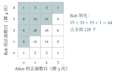

STEP I 2016，第 12 题
继续之前，请先阅读题目（原题为英文）。题目载于 STEP Support Programme 的题目资料库： step.maths.org/questions/16-s1-q12
引子
Bob 比 Alice 多掷一枚硬币。他掷得的正面（heads）比 Alice 多的概率（probability）是多少？他占了优势，但多掷一次不保证多一个正面，而且平手算他输。用硬算的方法做出头两个情况，两次的答案都是 \(\frac12\)。这是巧合吗？
不是巧合，而且有一个只需一句话的证明：只要留意到 Bob 掷得的正面或反面（tails）必有其一比 Alice 多，但不会两者皆多。这道题目是一个典范，示范了计算如何提示出规律，而巧妙的对称性（symmetry）又如何解释这个规律。
动笔之前
Alice 掷两次：她掷得正面的次数的分布（distribution）是甚么？掷三次的 Bob 又如何？
Alice 掷得 \(0, 1, 2\) 个正面的概率分别是 \(\frac14, \frac24, \frac14\)；Bob 掷得 \(0, 1, 2, 3\) 个正面的概率分别是 \(\frac18, \frac38, \frac38, \frac18\)。
逐步解题
阶段 1 硬算
第 (i) 部分，按 Alice 掷得的正面数目逐项相加： \[\begin{aligned} \mathrm{P}(B > A) &= \tfrac14\,\mathrm{P}(B \geq 1) + \tfrac24\,\mathrm{P}(B \geq 2) + \tfrac14\,\mathrm{P}(B = 3) \\ &= \tfrac14\cdot\tfrac78 + \tfrac12\cdot\tfrac48 + \tfrac14\cdot\tfrac18 = \frac{7 + 8 + 1}{32} = \frac12. \end{aligned}\] 第 (ii) 部分是同样的计算，只是项数较多；数一数 \(8 \times 16 = 128\) 个等可能的结果，其中 \(64\) 个是 Bob 领先（图 12.6.1），所以答案同样是 \(\frac12\)。
阶段 2 拆开 Bob 的投掷
把 Bob 的 \(n + 1\) 次投掷看成先掷 \(n\) 次，再额外掷一次。掷完头 \(n\) 次之后，他可能领先 Alice、与她平手，或者落后。每种情况下会发生甚么事？
二人各掷 \(n\) 次之后，Bob 领先的概率是 \(p_2\)，平手的概率是 \(p_1\)，落后的概率是 \(p_2\)（由 Alice 与 Bob 之间的对称性可知）。如果他领先，他会保持领先。如果平手，他额外的一掷有 \(\frac12\) 的概率令他领先。如果他落后，多一个正面最多只能追成平手。所以 \[\mathrm{P}(\text{Bob 的正面较多}) = p_2 + \tfrac12p_1.\] 由于这三种情况涵盖了所有可能，\(2p_2 + p_1 = 1\)，因此 \(p_2 + \frac12p_1 = \frac12\)。多了一枚硬币，Bob 掷得较多正面的概率对每个 \(n\) 都刚好是 \(\frac12\)。■
以下就是那个一句话的证明。Bob 掷 \(n + 1\) 次，所以他的正面和反面数目加起来是 \(n + 1\)，比 Alice 的多一。试证明 Bob 的正面比 Alice 多，当且仅当他的反面不比 Alice 多。由于正面与反面是对称的，这两个事件的概率相等，所以各为 \(\frac12\)。
事实上，记 \(H_A + T_A = n\) 及 \(H_B + T_B = n + 1\)：若 \(H_B > H_A\)，则 \(H_B \geq H_A + 1\)，所以 \(T_B = n + 1 - H_B \leq n - H_A = T_A\)；反过来，若 \(T_B \leq T_A\)，则 \(H_B \geq H_A + 1\)。所以“正面较多”与“反面较多”是互补（complementary）的，而把正面与反面对调（由于硬币是公平的，这不会改变概率）就会把两者互换。

回顾
计算小的情况。两次计算都提示答案是 \(\frac12\)。
按自然的划分来取条件。把 Bob 额外的一掷分开，问题便化为一场势均力敌的比试再加一枚硬币。
找出互补的一对。“正面较多”与“反面较多”互为补事件，并且在一个对称之下互换。
背后的数学
对称与补事件
那个漂亮的证明结合了两个事实：在一个对称之下互换的两个事件概率相等，而两个互补事件的概率之和为 \(1\)。若两者同时成立，则每个事件的概率都是 \(\frac12\)。同样的推理在概率论中随处可见。在航班座位问题（第 12.5 节）中，\(S_1\) 与 \(S_n\) 在一个对称之下互换，而最后剩下的恰好是其中一个。在六贯棋（Hex）中，由棋盘的对称性，加上恰有一方必胜这个事实，可知先手一方占优，不过在大棋盘上无人知道必胜策略是甚么。
平手的可能性有多大？
当二人投掷次数相同时，平手的概率 \(p_1\) 就很重要。Alice 与 Bob 平手，即 Alice 的正面数目等于 Bob 的正面数目；利用对称性，把 Bob 的正面换成他的反面，这个概率就等于 Alice 的正面数目加上 Bob 的正面数目等于 \(n\) 的概率，亦即在 \(2n\) 次投掷中共有 \(n\) 个正面。所以 \[p_1 = \binom{2n}{n}\frac{1}{4^n} \approx \frac{1}{\sqrt{\pi n}},\] 这里用了斯特灵近似（Stirling’s approximation）（第 12.23 节）。平手会变得罕见，但变得很慢：各掷 \(100\) 次，平手的机会仍然约有 \(5.6\%\)。
思维技巧
当计算得出一个简单得可疑的答案时，就要找出原因。简单的答案通常有简单的解释。
在大学里，这个习惯正是理解与计算的分野。这里的第一个证明确认了答案；第二个证明则解释了答案，而且可以立即推广（试做练习 2）。
延伸练习
多掷两枚硬币。若 Bob 掷 \(n + 2\) 枚硬币而 Alice 掷 \(n\) 枚，证明 \(\mathrm{P}(\text{Bob 的正面较多}) = \frac12 + \frac12\mathrm{P}(H' = H_A)\)，其中 \(H'\) 是 Bob 头 \(n + 1\) 次投掷中的正面数目。
不公平的硬币。若二人所用的硬币掷出正面的概率都是 \(p\)，多掷一次时答案是否仍然是 \(\frac12\)？那个漂亮的证明中哪一步不再成立？
平手。用正文中的技巧证明 \(p_1 = \binom{2n}{n}/4^n\)，并求它在 \(n = 1, 2, 3\) 时的值。
骰子。Alice 掷 \(n\) 粒骰子，Bob 掷 \(n + 1\) 粒。Bob 掷得较多六点的概率是否等于 \(\frac12\)？
延伸阅读
Peter Winkler, Mathematical Mind-Benders（A K Peters）。收录大量可用对称性解决的概率谜题。
Gabor Székely, Paradoxes in Probability Theory and Mathematical Statistics（Reidel）。
Frederick Mosteller, Fifty Challenging Problems in Probability（Dover）。